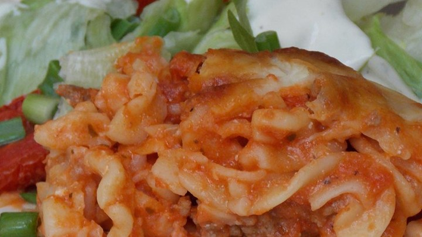

Recipe 1
Three-Ingredient Baked Chicken Brest
Ingredients
- 1/4 cup butter, melted
- 4 skinless, boneless chicken breast halves
- 1 teaspoon salt
-
Preheat oven to 350 degrees F (175 degrees C).
-
Stir 1/4 cup melted butter and salt together in a bowl.
-
Arrange chicken in the baking dish. Brush butter mixture onto the chicken until thoroughly coated, pouring any extra over the chicken.
-
Bake in the preheated oven until no longer pink in the center and the juices run clear, about 30 to 45 minutes. An instant-read thermometer inserted into the center should read at least 165 degrees F (74 degrees C).
Link to Recipe
Recipe 2
Lowfat Baked Chicken
Ingredients
4 skinless, boneless chicken breasts
2 cups cornflakes cereal
4 cups plain non-fat yogurt
Add all ingredients to list
Cooking instructions
- Preheat the oven to 350 degrees F (175 degrees C)
- Crush the cornflake crumbs between 2 pieces of wax paper.
-
Dip the chicken breasts in the yogurt, coating both sides. Roll in crushed cornflake crumbs to coat all sides, then place in a 9x13 inch baking dish. Bake the chicken in the preheated oven for 30 minutes.
Link to Recipe
Recipe 3
Pasta Bake

Ingredients
8 ounces mostaccioli pasta
8 ounces mostaccioli pasta
1 onion, chopped
1 (4 ounce) can mushrooms, drained
1 (28 ounce) jar spaghetti sauce
2 cups shredded mozzarella cheese
Cooking instructions
-
Bring a large pot of lightly salted boil water to a boil. Cook mostaccioli pasta in boiling water for 8 to 10 minutes, or until al dente. Drain well.
-
Meanwhile, cook ground beef and chopped onions in a skillet over medium heat until browned.
-
in a large bowl, mix together the mushrooms, spaghetti sauce, shredded mozzarella cheese, pasta, and browned ground beef and onion mixture. Transfer to a greased, 9x13 inch casserole dish.
-
Bake at 325 degrees F (165 degrees C) for 20 minutes, or until very hot.
Link to Recipe